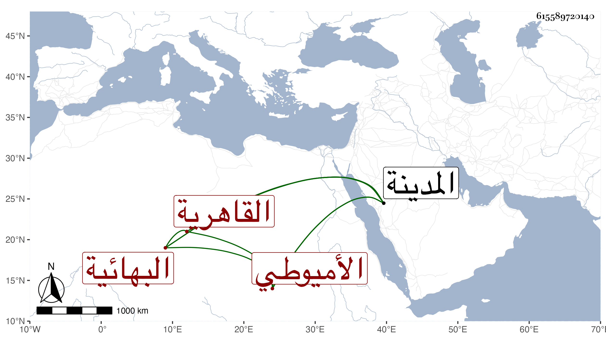

0902Sakhawi.DawLamic.ITO20230111-ara1.EIS1600.615589720140
Biography ID: 615589720140
895
أم الخير ابنة علي بن محمد بن يوسف الأميوطي الأصل القاهرية البهائية . ولدت في أواخر سنة سبع وثلاثين وثمانمائة بمنزل أبيها تجاه مدرسة البلقيني ، وتزوجها كاتبه بكرا في سنة ثمان وأربعين واستجاز لها خلقا كشيخنا والعز بن الفرات بل أسمعها على جماعة وأستولدها أزيد من عشرة أولاد ما بين ذكور وإناث وهي صابرة على فقدهم أولا فأولا ، وحجت معي غير مرة وجاورت سنة ثم سنتين وبعضهما بالمدينة النبوية ثم سنتين ثم سنين وبعضها بالمدينة النبوية أيضا ، وكانت في المسجدين على قدم عظيم من الاجتهاد في العبادة ولزمت ذلك بعد رجوعها مع مزيد احتمالها وتوددها وعقلها وتدبرها لقولها وفعلها وحرصها على استجلاب الخواطر وتقنعها وعدم شكواها ورغبتها في البر والصلة والإطعام وتقديمها في كثير من هذا على نفسها وشدة خوفها من الله تعالى وهي في كل ما أشرت إليه بمكان جوزيت خيرا وختم لنا بخير .
